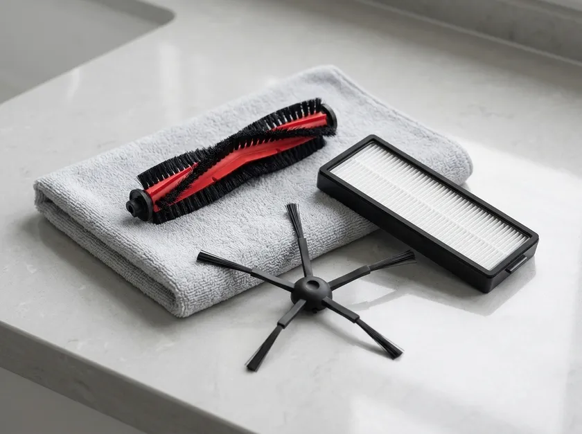
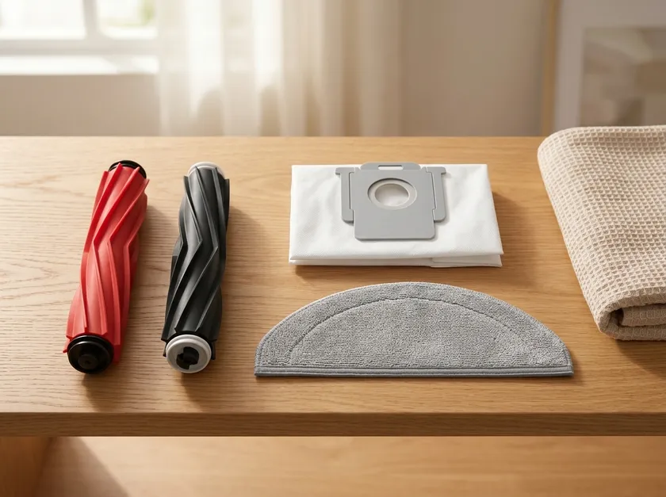

로보락 (Roborock)
로보락 S8 Pro Ultra 도크 세척브러시·필터 관리와 기간별 세트 선택 기준
글·구성: 제이상점 · 기종별 1:1 호환 실물 점검 · 교체 주기 비교표 · 스마트스토어 패키지 안내

핵심 관리 · 선택 체크포인트
- 물걸레 패드를 자주 빨아 써도 세척 후 개운함이 덜하다면 본체 하단뿐 아니라 도크 안쪽 고속 세척브러시와 먼지통 필터 건조 상태까지 함께 살펴볼 시점입니다.
- S8 Pro Ultra 기간별 3가지 세트와 규격 구분 포인트: S8 Pro Ultra는 5발 사이드브러시와 넓은 직사각 먼지통 필터, 반원형 단일 진동 걸레 규격을 사용합니다.
- 필터 세척 후에는 완전히 말려 재장착해야 공기 흐름과 냄새 관리에 유리하므로 예비 필터 1개 이상을 번갈아 사용하는 방식을 권장합니다.
- 먼지통 필터와 도크 세척브러시는 역할을 구분해 챙겨요: 주문할 때 가장 자주 혼동하는 필터 종류 차이는 S8 Pro Ultra 먼지통 필터와 도크 물필터 구분법에서, 본체 바닥 롤러와 도크 세척 롤러의 차이는 S8 Pro Ultra 메인브러시와 세척브러시 추가 옵션 구분하기에서 확인해 보세요.
- 구성표 수량과 해외직배송 안내를 확인하고 세트를 선택하세요: 도크 세척브러시 잠금 레버와 기존 사이드브러시 발 수(5발)를 확인했다면 로보락 S8 Pro Ultra 호환 소모품 1년·6개월·3개월 세트 상세 화면에서 정확한 포함 수량을 살펴보실 수 있습니다.
실물 부품 디테일 · 관리 구성 이미지


부품 규격 · 점검 기준표
| 필수 옵션명 | 구성 방향 | 주문 전 대조할 부품 특징 |
|---|---|---|
| 1년 세트 | 장기 관리용 전체 소모품 여유 구성 | 듀오롤러·5발 사이드브러시·필터·물걸레·더스트백을 넉넉히 비축할 때 |
| 6개월 세트 | 실속 있는 중기 교체용 구성 | 필터 교대 건조와 걸레 교체를 규칙적으로 이어가는 가정 |
| 3개월 세트 | 기본 소모 부품 중심 단기 구성 | 우선 필요한 소모품 수량부터 가볍게 점검해 보고 싶을 때 |
💡 교체 주기가 겹치는 필터·브러시·물걸레·더스트백은 단품 배송비를 여러 번 내기보다 로보락 S8 Pro Ultra 기간별 세트(3개월·6개월·1년)로 미리 구비해 두면 물세척 후 24시간 교대 건조까지 끊김 없이 관리할 수 있습니다.
자주 묻는 질문 (FAQ)
Q. 로보락 S8 Pro Ultra의 1년 세트 규격과 관리 기준은 무엇인가요?
A. 장기 관리용 전체 소모품 여유 구성 규격을 사용하며, 듀오롤러·5발 사이드브러시·필터·물걸레·더스트백을 넉넉히 비축할 때 기준으로 점검·교체하면 청소 효율을 안정적으로 유지할 수 있습니다.
Q. 로보락 S8 Pro Ultra의 6개월 세트 규격과 관리 기준은 무엇인가요?
A. 실속 있는 중기 교체용 구성 규격을 사용하며, 필터 교대 건조와 걸레 교체를 규칙적으로 이어가는 가정 기준으로 점검·교체하면 청소 효율을 안정적으로 유지할 수 있습니다.
Q. 로보락 S8 Pro Ultra의 3개월 세트 규격과 관리 기준은 무엇인가요?
A. 기본 소모 부품 중심 단기 구성 규격을 사용하며, 우선 필요한 소모품 수량부터 가볍게 점검해 보고 싶을 때 기준으로 점검·교체하면 청소 효율을 안정적으로 유지할 수 있습니다.
제이상점 1:1 검수 추천 패키지 · 구매 안내
메인 추천 구성
대표 구성 참고가 57,900원대 (옵션·쿠폰별 스마트스토어 결제 화면 기준)
1년 세트6개월 세트3개월 세트
☑️ 주문 전 확인해 두면 좋은 제이상점 안심 포인트
· 기종별 1:1 전용 규격 검수: 모델명·연식에 맞는 호환·정품 구성을 검수해 오주문 불안을 줄였습니다.
· 해외직배송 미리 주문 팁: 중국 구매대행·해외직배송 상품이므로 마지막 여분 1개를 꺼내 쓰는 시점에 개인통관고유부호와 함께 여유 있게 주문해 두시면 훨씬 경제적인 비용으로 끊김 없이 교체하실 수 있습니다.
· 기종별 1:1 전용 규격 검수: 모델명·연식에 맞는 호환·정품 구성을 검수해 오주문 불안을 줄였습니다.
· 해외직배송 미리 주문 팁: 중국 구매대행·해외직배송 상품이므로 마지막 여분 1개를 꺼내 쓰는 시점에 개인통관고유부호와 함께 여유 있게 주문해 두시면 훨씬 경제적인 비용으로 끊김 없이 교체하실 수 있습니다.
📖 더 많은 가정 내 사용 스토리와 상세 후기가 궁금하시다면
📱 네이버 블로그 모바일 원문 보기 ↗